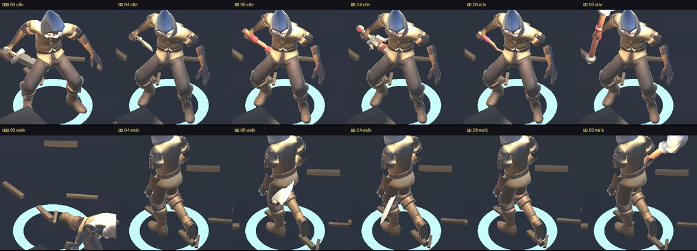
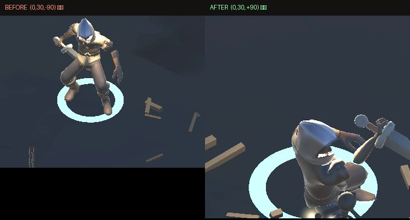
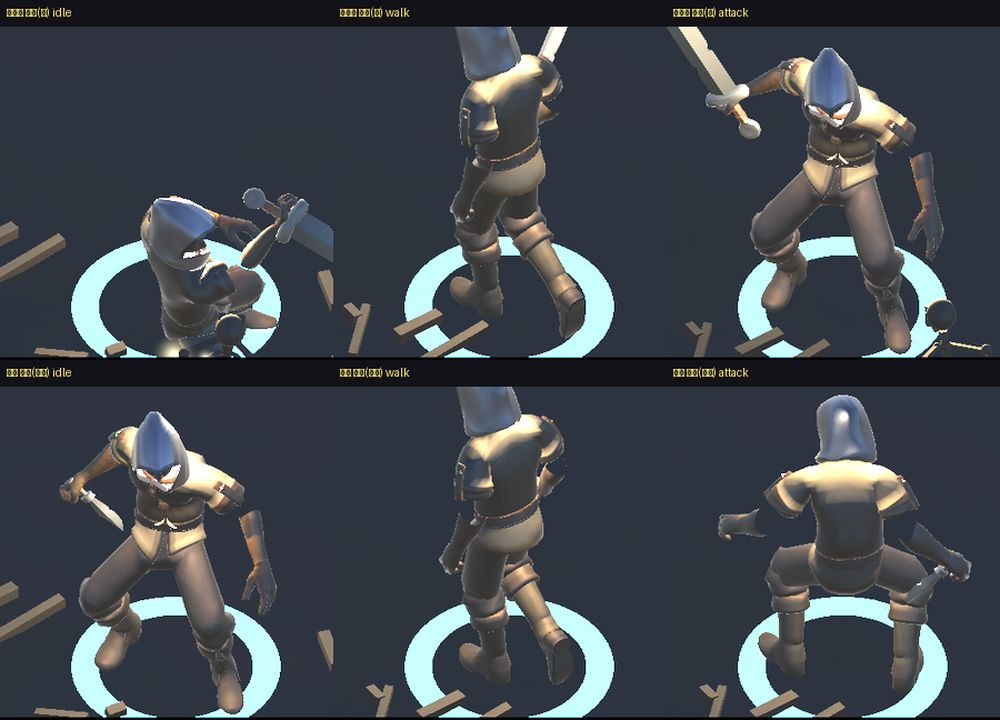
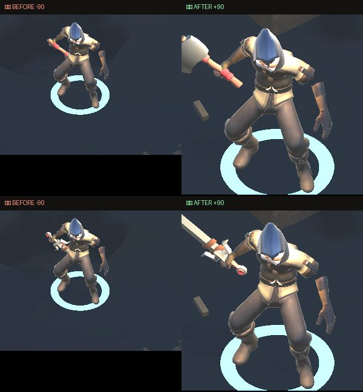
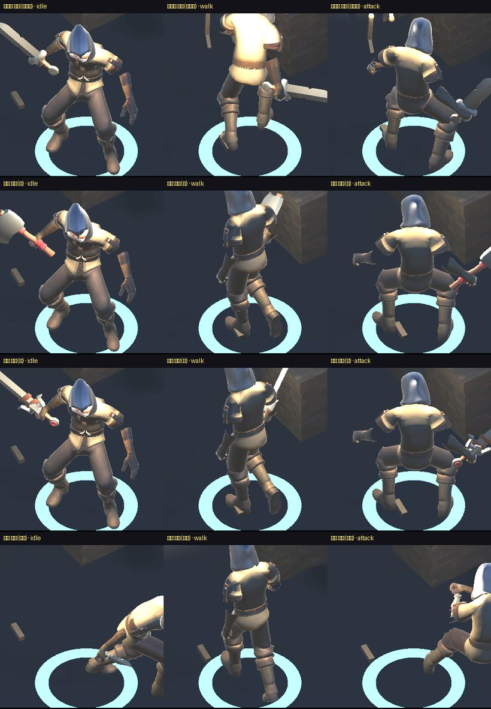

地城迴響 · 地板異常與武器握姿
單手劍、戰斧、大刀都改成正握；匕首維持反握
這一頁是三件事的結果：①地板矩形亮塊找到真正原因並修好（你已確認 OK）②武器握姿——第一版六把共用同一個補償值是錯的，已改成每把各自的值， 最新的是第 4 版：戰斧與大刀確認也是同一個病，一起改正握 ③（順帶）實機閃退的根因。地板與閃退已經 commit；這一輪的握姿改動還沒 commit、也還沒出 TestFlight，等你確認握姿。
1地板矩形亮塊
你描述的是：石造走廊／門口附近，火把在地面照出的暖色亮斑裡，疊著一塊邊緣銳利、偏冷灰白、矩形帶一個斜切角的圖案。下面這張是我在模擬器重現到的同一塊東西。

真正的原因
不是貼圖錯位、不是誤植的 debug 圖形、也不是特效殘留。是這一行：
foreach (var r in Floor.Rooms) Furnish(r);
裝飾流程只對「房間」呼叫，走廊從來沒有被裝飾過。房間地板鋪了污漬貼花（裂痕、霉斑、水漬，用相乘混合把地板壓暗），走廊維持乾淨的原色。於是走廊在畫面上就是一塊比周圍亮、邊緣完全筆直的矩形；而等角視角讓矩形的角看起來像被斜切掉一塊，也就是你說的「像旗幟或箭頭的一角」。
它只在門口／走廊附近出現、只在被火把照到時看得見——跟你描述的位置與條件完全吻合。
前三輪我都猜錯了，寫下來提醒自己：猜過「貼花 shader 載不到退回不透明白色」（log 證實 shader 正常）、猜過蜘蛛網（那是 0.018 公尺粗的細絲，不是實心塊）、用「冷色像素」自動找（判準太寬，抓到的是整片冷色調的牆）。三次都是從畫面回推它可能是什麼。最後改成反過來問畫面：加一支不受光的純色 shader，同一個機位拍兩張，一張是遊戲畫面、一張把每個物件塗成獨一無二的顏色，直接讀那塊像素查出它是誰——一次就中。
修法與前後對照
補上走廊的污漬，而不是把房間的拿掉：接縫之所以顯眼是因為兩邊的髒污密度不一樣，補齊才會連成一片。走廊密度刻意比房間低（它本來就是通道），牆腳積垢也一起補。

2武器握姿驗收
根因是一個系統性偏差，不是六把武器各自的問題：hand_r 這根骨頭的原點在手腕而不是掌心，差了 12 公分。所以六把武器都是「拳頭落在護手上方、真正的握把整段露在拳頭外面」，看起來就像反手拿。修法是一個常數，六把一起套用。
第一版（六把共用 0.12）——已作廢

第二版：每把武器各自的偏移量
你說握姿還要再調之後，我沒有再用眼睛看，而是把六把武器 × 五個偏移量全部掃一遍，量兩個客觀數字：t＝拳頭落在武器長軸上的比例（0＝柄尾端，理想約 0.11～0.14），以及 minY＝武器網格的最低點（小於 0 就是插進地板）。
結果推翻了「六把共用一個常數」：
| 武器 | 長度 | 舊值 0.12 的 t | 新值 | 新的 t |
|---|---|---|---|---|
| 匕首 | 0.36 m | -0.07 拳頭跑到柄尾外面 | 0.04 | 0.11 |
| 魔杖 | 0.40 m | 0.04 貼在柄尾邊緣 | 0.08 | 0.12 |
| 單手劍 | 0.77 m | 0.09 | 0.08 | 0.13 |
| 戰斧 | 0.68 m | 0.08 | 0.08 | 0.13 |
| 大刀 | 0.99 m | 0.08 | 0.04 | 0.14 |
| 法杖 | 1.36 m | 0.48 位移對握點幾乎沒作用 | 0.00 | 0.45 |
匕首在舊值下的 t 是負的——意思是拳頭已經跑到刀柄末端外面去了，短刀等於浮在手掌旁邊沒被真正握住。魔杖也貼在邊緣。武器長度差了四倍（匕首 0.36 m、法杖 1.36 m），同一個絕對位移在短武器上就是過頭；法杖則相反，它握的是杖身中段，那個位移對握點幾乎沒作用，只是把整支杖往下推，於是杖頭頂在肩膀旁邊——你和我都覺得法杖怪，原因就是這個，現在退回 0。

第三版：問題其實是「朝向」不是「握點」
你這句回饋把問題重新定義了。「匕首可以反握、單手劍目前是反握要改正握」——前兩輪我修的都是握點位置（沿武器長軸往手掌推多少），那是次要問題；真正被抱怨的是握持朝向。這兩件事我先前混在一起了。
查程式碼證實了你的判斷：單手劍與匕首用的是完全相同的旋轉 Euler(0, 30, -90)（劍走自己的掛載、匕首走通用預設值，兩條路殊途同歸）。同一個朝向，匕首讀起來像刻意的反手持刀（匕首本來就有這種握法），單手劍讀起來就是劍拿反了。

-90，刀身朝下橫過身體、刀尖指向地面後方。右：新的 +90，刀身往前上方延伸，是一般持劍的樣子。只動了單手劍，匕首照你說的維持反握。翻面要繞垂直於刀身的軸轉——這把劍的刀身沿模型 +Y，所以動 Z 才會翻面，動 Y 只是讓劍繞自己的軸自轉、畫面上看不出差別（掃描時 y=210 與 x=180,z=90 產生的畫面跟 z=+90 完全一樣，就是同一個朝向的不同寫法）。順帶量到刀尖最低點從 0.35 m 變成 0.64 m，離地更遠，不會有穿地板的問題。

第四版：戰斧與大刀確認也是同一個病
你同意檢查之後，我用跟單手劍完全相同的方法掃了這兩把：關掉戰鬥、確認當下播的是 Sword_Idle、同姿勢同機位排對照圖。
這一輪特地把兩張基準圖一起拍進對照表：已經你確認 OK 的單手劍（正握）、以及你說可以接受的匕首（反握）。有基準才能說「這個候選跟已確認的那個一致」，而不是只能說「看起來還行」——前幾輪就是敗在沒有基準。

-90，斧頭與刀身都貼著身體朝下，跟修正前的單手劍是同一個樣子。右：新的 +90，兩把都往前上方展開，跟已確認 OK 的單手劍呈現一致。結論：三把主手近戰武器（單手劍、戰斧、大刀）共用 +90。匕首與魔杖維持 -90——匕首是你明確說可以反握，魔杖沒有被點名也沒有量過，我沒有順手一起翻。

幾何判準在這個主題上已經連錯三次，這裡再記一次。這一輪的 dot 值仍然對不上：已確認 OK 的單手劍被判成「橫持」（0.06），大刀翻面後也是「橫持」（0.03），可接受的匕首反握被判成「正握」（0.23）。三把武器最後都是靠與基準圖的視覺一致性挑的，數字只用來確認沒有插進地板（最低點 0.42～0.66 m，都在地面之上）。
這一輪我兩個自動判準又都錯了，留著當記錄。第一個判準用「刀尖朝角色的前方還是後方」判正握／反握，結果把現況的劍判成「正握」，跟你說的相反。第二個改用「刀身相對前臂往哪延伸」，把匕首判成「正握」，也跟你的描述對不上。正握／反握是美術判斷，不是幾何唯一解——最後仍然是把候選排成同姿勢同機位的對照圖用看的挑出來的。
過程中也修掉兩個壞掉的對照組：角色一直在跟骷髏交戰，定格抓到的是揮砍姿勢不是待機（已改成拍攝前把敵人關掉，並且把當下播放的動畫名稱印出來確認是 Sword_Idle）。
順帶確認沒有插進地板。我原本看第一版的行走截圖，判斷「戰斧和大刀的刀尖掃到地面」，量了才發現是誤判——待機時最低的是大刀 0.243 m、法杖 0.257 m，都在地面之上，沒有穿模。大刀仍然選了較小的 0.04，因為它離地最近，少推一點多 2.3 公分餘裕。
3順帶：實機閃退的根因
你回報的閃退不是地上掉落物太多。換樓層時掉落物本來就會被清掉，實測連下 26 層，地上物件全程 0～4 個。真正的原因是換樓層時貼圖、網格、材質沒有被回收——銷毀場景物件不會回收它引用的資產。
| 項目 | 修正前（第 26 層） | 修正後（第 26 層） |
|---|---|---|
| 貼圖 | 1571 張 / 904 MB | 123 張 / 143 MB |
| 網格 | 8818 個 / 5686 MB | 1429 個 / 517 MB |
| 材質 | 4564 個 | 1358 個 |
| 總配置記憶體 | 3430 MB | 758 MB |
iPhone 大約 2GB 上限：修正前約第 16～18 層撞牆（跟「打到一定深度就閃退」吻合），修正後同樣的量要到第 70 層左右。
還有殘留約 19MB/層沒清乾淨。來源是每隻骷髏烘出來的骨架網格，以及走廊／房間裝飾的合併網格。沒有一起處理，是因為骨架網格的綁定姿勢跟該實例當下的骨頭矩陣有關，快取的風險比前面三項高，我不想在修閃退的同一輪順手改。無盡模式跑很深仍可能中——要處理的話我再單獨做一輪。
另外我沒有拿到這次的 crash log。上面的結論是量出來的，不是從 log 讀的（兩者一致，但不是同一份證據）。要 100% 確認終止原因是記憶體不足，麻煩接上 iPhone，Xcode → Window → Devices and Simulators → View Device Logs，撈最新那筆 ProductName 給我。
4需要你決定的
| 要決定的 | 為什麼不能我自己決定 |
|---|---|
| 三把武器的正握是否全部過關 | 幾何只能保證刀身往哪個方向延伸，保證不了姿態好不好看。而且這一輪兩個自動判準都跟你的判斷相反，這題只能你看畫面 |
| 魔杖要不要也翻 | 魔杖目前仍是 -90，跟匕首同一組。它沒有被點名過、我也沒量過，而且魔杖本來就不是揮砍武器，反握不一定是問題——要不要動由你決定 |
| 要不要出 TestFlight | 閃退是你回報的，最終要在真機上才算數——但你說先看截圖，所以我沒有出 |